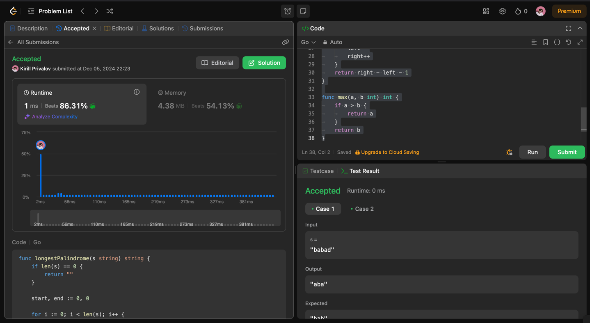
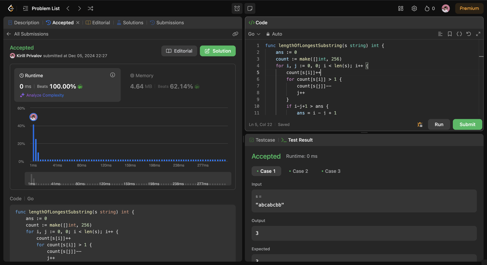
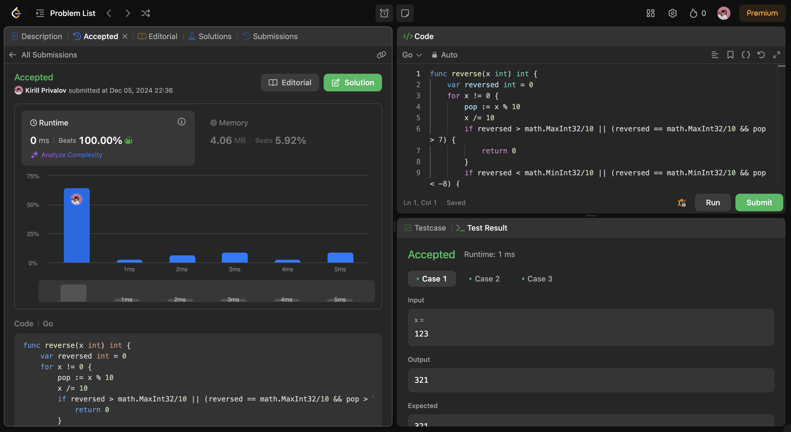
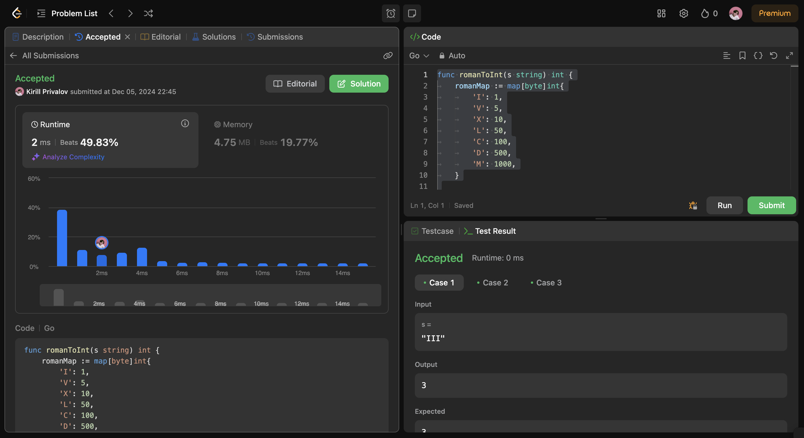

Leetcode
Longest palindromic substring
Given a string s, return the longest palindromic substring in s.
Example 1: Input: s = "babad" Output: "bab" Explanation: "aba" is also a valid answer.
Example 2: Input: s = "cbbd" Output: "bb"``
Constraints: 1 <= s.length <= 1000 s consist of only digits and English letters.
func longestPalindrome(s string) string {
if len(s) == 0 {
return ""
}
start, end := 0, 0
for i := 0; i < len(s); i++ {
len1 := expandFromCenter(s, i, i)
len2 := expandFromCenter(s, i, i+1)
maxLen := max(len1, len2)
if maxLen > end-start {
start = i - (maxLen-1)/2
end = i + maxLen/2
}
}
return s[start : end+1]
}
func expandFromCenter(s string, left, right int) int {
if left > right {
return 0
}
for left >= 0 && right < len(s) && s[left] == s[right] {
left--
right++
}
return right - left - 1
}
func max(a, b int) int {
if a > b {
return a
}
return b
}

Longest Substring Without Repeating Characters
Given a string s, find the length of the longest substring without repeating characters.
Example 1: Input: s = "abcabcbb" Output: 3 Explanation: The answer is "abc", with the length of 3.
Example 2: Input: s = "bbbbb" Output: 1 Explanation: The answer is "b", with the length of 1.
Example 3: Input: s = "pwwkew" Output: 3 Explanation: The answer is "wke", with the length of 3. Notice that the answer must be a substring, "pwke" is a subsequence and not a substring.
Constraints: 0 <= s.length <= 5 * 104 s consists of English letters, digits, symbols and spaces.
func lengthOfLongestSubstring(s string) int {
ans := 0
count := make([]int, 256)
for i, j := 0, 0; i < len(s); i++ {
count[s[i]]++
for count[s[i]] > 1 {
count[s[j]]--
j++
}
if i-j+1 > ans {
ans = i - j + 1
}
}
return ans
}

Reverse Integer
Given a signed 32-bit integer x, return x with its digits reversed. If reversing x causes the value to go outside the signed 32-bit integer range [-231, 231 - 1], then return 0. Assume the environment does not allow you to store 64-bit integers (signed or unsigned).
Example 1: Input: x = 123 Output: 321
Example 2: Input: x = -123 Output: -321
Example 3: Input: x = 120 Output: 21
Constraints: -231 <= x <= 231 - 1
func reverse(x int) int {
var reversed int = 0
for x != 0 {
pop := x % 10
x /= 10
if reversed > math.MaxInt32/10 || (reversed == math.MaxInt32/10 && pop > 7) {
return 0
}
if reversed < math.MinInt32/10 || (reversed == math.MinInt32/10 && pop < -8) {
return 0
}
reversed = reversed*10 + pop
}
return reversed
}

Roman to Integer
Roman numerals are represented by seven different symbols: I, V, X, L, C, D and M.
Symbol Value I 1 V 5 X 10 L 50 C 100 D 500 M 1000 For example, 2 is written as II in Roman numeral, just two ones added together. 12 is written as XII, which is simply X + II. The number 27 is written as XXVII, which is XX + V + II.
Roman numerals are usually written largest to smallest from left to right. However, the numeral for four is not IIII. Instead, the number four is written as IV. Because the one is before the five we subtract it making four. The same principle applies to the number nine, which is written as IX. There are six instances where subtraction is used:
I can be placed before V (5) and X (10) to make 4 and 9. X can be placed before L (50) and C (100) to make 40 and 90. C can be placed before D (500) and M (1000) to make 400 and 900. Given a roman numeral, convert it to an integer.
Example 1: Input: s = "III" Output: 3 Explanation: III = 3.
Example 2: Input: s = "LVIII" Output: 58 Explanation: L = 50, V= 5, III = 3.
Example 3: Input: s = "MCMXCIV" Output: 1994 Explanation: M = 1000, CM = 900, XC = 90 and IV = 4.
Constraints: 1 <= s.length <= 15 s contains only the characters ('I', 'V', 'X', 'L', 'C', 'D', 'M'). It is guaranteed that s is a valid roman numeral in the range [1, 3999].
func romanToInt(s string) int {
romanMap := map[byte]int{
'I': 1,
'V': 5,
'X': 10,
'L': 50,
'C': 100,
'D': 500,
'M': 1000,
}
total := 0
prevValue := 0
for i := len(s) - 1; i >= 0; i-- {
currentValue := romanMap[s[i]]
if currentValue < prevValue {
total -= currentValue
} else {
total += currentValue
}
prevValue = currentValue
}
return total
}
